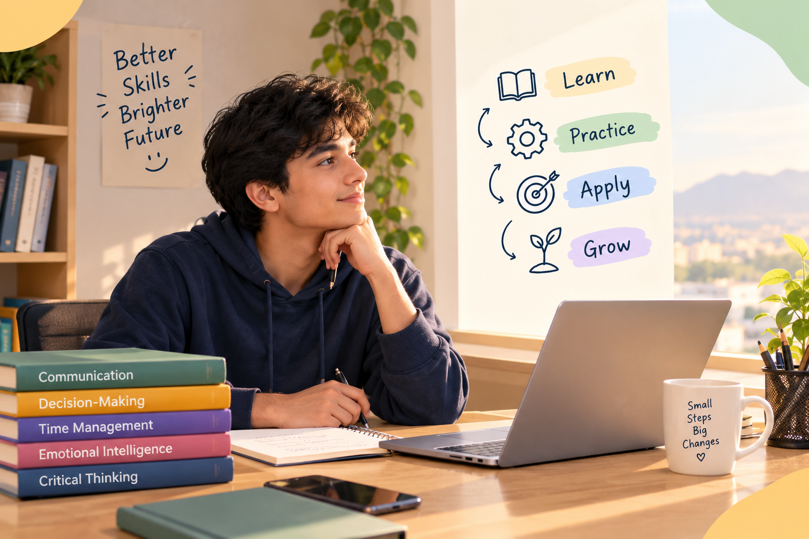

Communication
I started speaking more clearly, listening better, and noticing where misunderstandings came from.
LifeSkills Hub started from a simple idea: many of the things that make life difficult are skills we can actually learn and practice.

When I was in school, especially when I was younger, I struggled in many situations that needed skills I didn't even know had a name.
I studied the subjects I was taught, did my work, and tried to do what was expected. But I wasn't thinking about things like how to communicate clearly, how to make better decisions, how to manage my time, how to understand my emotions, or how to question information.
I didn't know that these were skills too.
After listening to a speech by Mel Robbins at my friend's house, I became very interested in her ideas. Later, I dedicated my free time to watching videos and listening to podcasts by different people on YouTube. I found useful ideas and became familiar with stories of different people who I listened to videos.
I heard people talk about problems that felt very familiar to me. Little by little, I realized something important:
That changed how I looked at my own life. I started reading more about these skills and trying to practice them in small ways.
I practiced them in my personal life, in my education, in conversations, and in the everyday situations around me.
At first, they were just small actions. Over time, some of them became habits. Then I noticed positive changes, more satisfaction, and more confidence in many parts of my life. Life became easier by applying these skills, and I felt much more fulfillment, clarity, and happiness.
I didn't become a different person overnight. I just started understanding myself and my situations a little better.
I started speaking more clearly, listening better, and noticing where misunderstandings came from.
I became more careful about what I believed, what I assumed, and what I actually knew.
I learned to slow down, look at my options, and think about what really mattered and connected to my goal.
I started using small blocks of time more intentionally in both study and daily life.
I learned that noticing my emotions is different from ignoring them or letting them control me.
Looking back, I often think about how different some situations could have felt if I had known about these skills earlier.
So I wanted to make a simple place where someone can come, become familiar with these skills, try a small practice, and then keep learning from other people and other resources.
Maybe that person is still in school. Maybe they just graduated. Maybe they are an adult who is still trying to figure things out.
I may never meet them. They may never know me. But they can still use something they find here.
LifeSkills Hub is here to give people a simple starting point for learning and practicing useful life skills.
Understand what the skill is and why it matters.
Try small exercises that are simple enough to start today.
Take the skill into real conversations, study, work, and everyday life.
I believe useful growth can start with one small action that you repeat and understand over time.
One small action can be the beginning of a habit.
Knowing a skill is different from actually using it.
You can notice what went wrong and try again.
You can practice them at home, in school, at work, and with other people.
These five areas are the starting point of LifeSkills Hub.
Listen, speak, and connect more clearly.
Explore → 🔎Question information and think more carefully.
Explore → 🧭Make thoughtful choices when things are unclear.
Explore → ⏰Use your time in ways that support what matters.
Explore → ❤️Notice emotions and choose how to respond.
Explore →I don't believe these practices or resources are a complete path to mastering life skills. There is much more to learn, and there are many people who have shared valuable knowledge and experience.
I created LifeSkills Hub to make the first step easier: become familiar with a skill, try something small, notice what happens, and then keep searching, learning, and practicing.
I am still learning too.
I want LifeSkills Hub to keep growing with more practical challenges, useful resources, and better ways to turn learning into everyday action.
Start with one skill. Try one small practice. Then keep going from there.